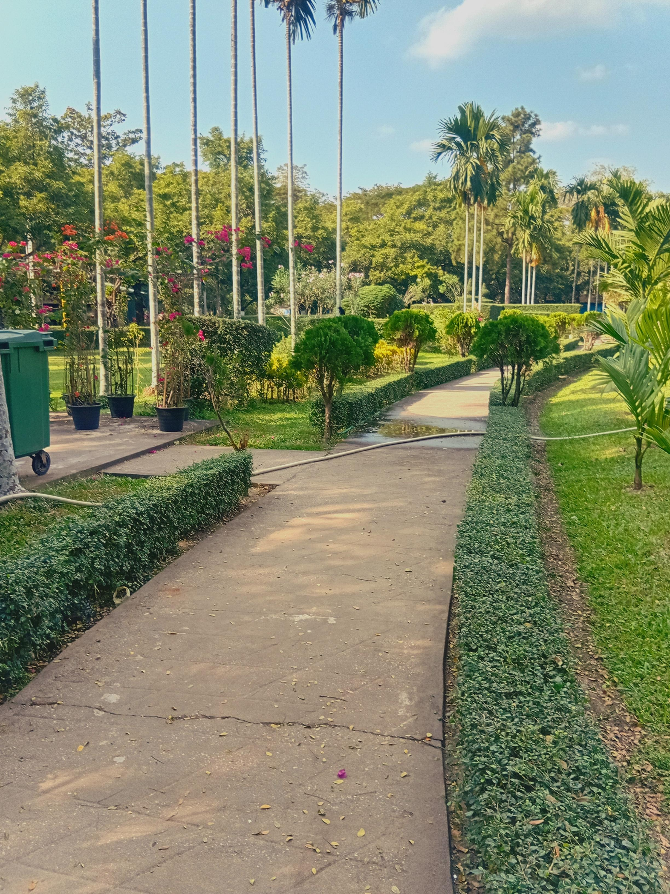

A Space For Everyone
Our local park is a place where families gather, children play, and communities grow stronger together. It offers a peaceful environment filled with greenery, fresh air, and open spaces for relaxation and recreation.
Why Is A Park Important?
Parks are beneficial to communities because they create a space for community members to congregate safely and enjoy nature; kids can play under their parents' watchful eye and community members can improve their health with equipment, all within a relaxing environment.
Spending a small amount of time at a community park can have a significant impact on your health. Even just 30 minutes in a park can help:
- Strengthen your heart and prevent heart diseases
- Decrease blood pressure and cholesterol
- Reduce inflammation
- Boost your immune system
Public parks can encourage people to take control of specific aspects of their physical health or experience general health benefits for stronger, healthier communities. Parks and recreation areas can also help improve mental health, allowing the wellness benefits to extend past encouraging better physical health. Frequently visiting parks can help reduce depression and anxiety, and exercising in parks can reduce stress and lower cortisol levels by 15%. Simply viewing nature-inspired scenery led to reports of less fear and anger and more considerable attention and peacefulness.

Playground Equipment In Our Local Park
Monkey Bars

Monkey bars are a classic, horizontal ladder-style playground, 6, and sometimes fitness, obstacle, 3, structure, designed for hand-over-hand swinging, that builds upper body strength, coordination, and confidence in children and adults. Constructed from metal or wood.
See MoreSpider Web Net Climber

A spider web net climber is a specialized, often circular, playground structure designed for ages 5-12, featuring a web-like pattern rather than traditional grids. These durable cable, steel, or rope structures encourage imaginative play and improve physical strength, coordination, and balance.
See MoreTrampoline

A spider web net climber is a specialized, often circular, playground structure designed for ages 5-12, featuring a web-like pattern rather than traditional grids. These durable cable, steel, or rope structures encourage imaginative play and improve physical strength, coordination, and balance.
See MoreGallery Of Our Local Park